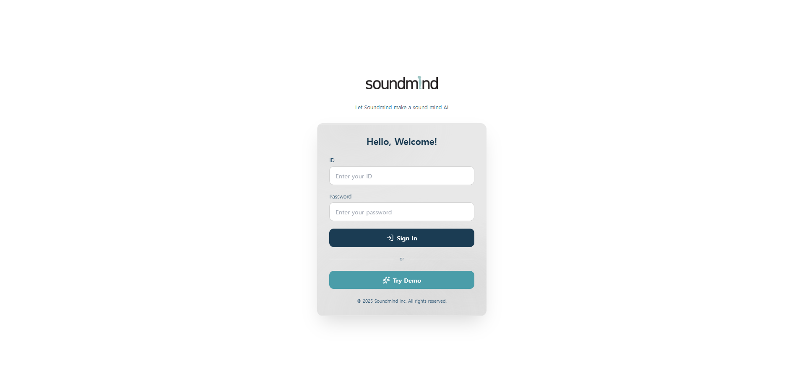

[Enterprise AI Platform] Soundmind AI Platform
기술 엔진 납품 고객사가 자사 고객에게 AI 기술을 시연할 수 있는 B2B2B Playground 플랫폼.
1인 Full-Stack 구축, 고객사별 RAG Pipeline 분리 구조.
Welcome to my portfolio
I'm a Career Switcher to AI from Architectural
Currently Developing RAG & Agent Technologies.
사람의 커뮤니케이션을 AI 시스템으로 옮기는 일을 합니다

안녕하세요. 건축공학을 전공하고 건설회사에서 Engineer이자 Manager로서,
품질·공정·생산성 관리와 노동조합과의 교섭 등, 복합적인 현장 문제를 정의하고 조율해 온 경험을 바탕으로,
현재는 현장에서의 문제 인식, 판단, 조율 과정을 분해하여 이를 자연어 기반 Agent 시스템의
추론 흐름과 의사결정 구조로 설계하는 연구를 진행하고 있습니다.
저는 기초를 가장 중요하게 생각합니다.
어떤 기술이든 근본적인 질문에 대한 이해 없이 쌓아 올려진 구조는 반드시 한계에 부딪힌다고 믿기 때문입니다.
그래서 Agent가 어떻게 추론하고, 어떤 구조에서 성능 차이가 발생하는지를
Model 비교 실험으로 확인하고, 사내 Report 작성을 통해 기록하며 개선하는 과정을 좋아합니다.
이러한 접근을 바탕으로, 현재 소속 회사에서는 연구 결과를 실제로 확인하고 활용할 수 있도록,
Playground 형태의 Platform 개발을 기획하고 Project Lead로서 설계와 구현을 진행하고 있습니다.
아직 배울 점이 많지만, 본 포트폴리오는 그런 고민과 실험의 결과를 정리하는 공간입니다.
실무 경력
AX / AI Research Engineer / Manager
주택사업본부 / Architectural Site Engineer
Head Office / Construction Project Manager
건축사업본부 / Architectural Site Engineer
외부 연구 활동
Research Member / GPU-Accelerated ML Researcher
학력 사항
Bachelor's degree, Architecture Engineering
Associate's degree, Architecture Design
교육 및 수료

연구를 위한 AI 활용 과정 (모두의연구소)
프롬프트 엔지니어링 과정 (The Prompt Company: Ph.D 강수진)

Data & AI Alignment Engineer 과정
수상 경력
전사 최우수 현장 선정
전사 품질 대상 수상
'H-Silence' 층간차음재 현장 실증, 국토교통부 1등급 인증 획득 기여
두산건설 하남미사 A17BL 공공임대주택 신축공사
「건축현장에서 멘토링 도입을 통한 조직 몰입도 향상에 관한 연구」
자격증
한국데이터산업진흥원
실무 프로젝트 & 연구
기술 엔진 납품 고객사가 자사 고객에게 AI 기술을 시연할 수 있는 B2B2B Playground 플랫폼.
1인 Full-Stack 구축, 고객사별 RAG Pipeline 분리 구조.
B2B 납품 전, RAG 성능을 정량적으로 증명하는 사내 개발자 도구.
Node별 독립 평가 + LLM-as-a-Judge + A/B Test 통계 검정.

GPU 서버 SLA/SLO 충족 여부를 검증하는 LLM 부하 테스트 도구.
Goodput 기반 품질 평가, Cross-validation, 2일 AI-Native 빌드.

RAG 파이프라인의 문서 이해 능력 향상을 위한 사내 R&D.
4-Parser 비교 × 4단계 평가 프레임워크. Structure F1: 0% → 79%.

맞춤형 AI 도구로 반복 작업 자동화, 첫 정량적 성과 달성.
총기 반동 생성 40분→30초(98.7%↓), MCP Server Smithery.ai 배포.
vLLM + FastAPI 기반 현재 서빙 구조 대비 Triton Inference Server의 성능 이점을 객관적 지표로 비교.